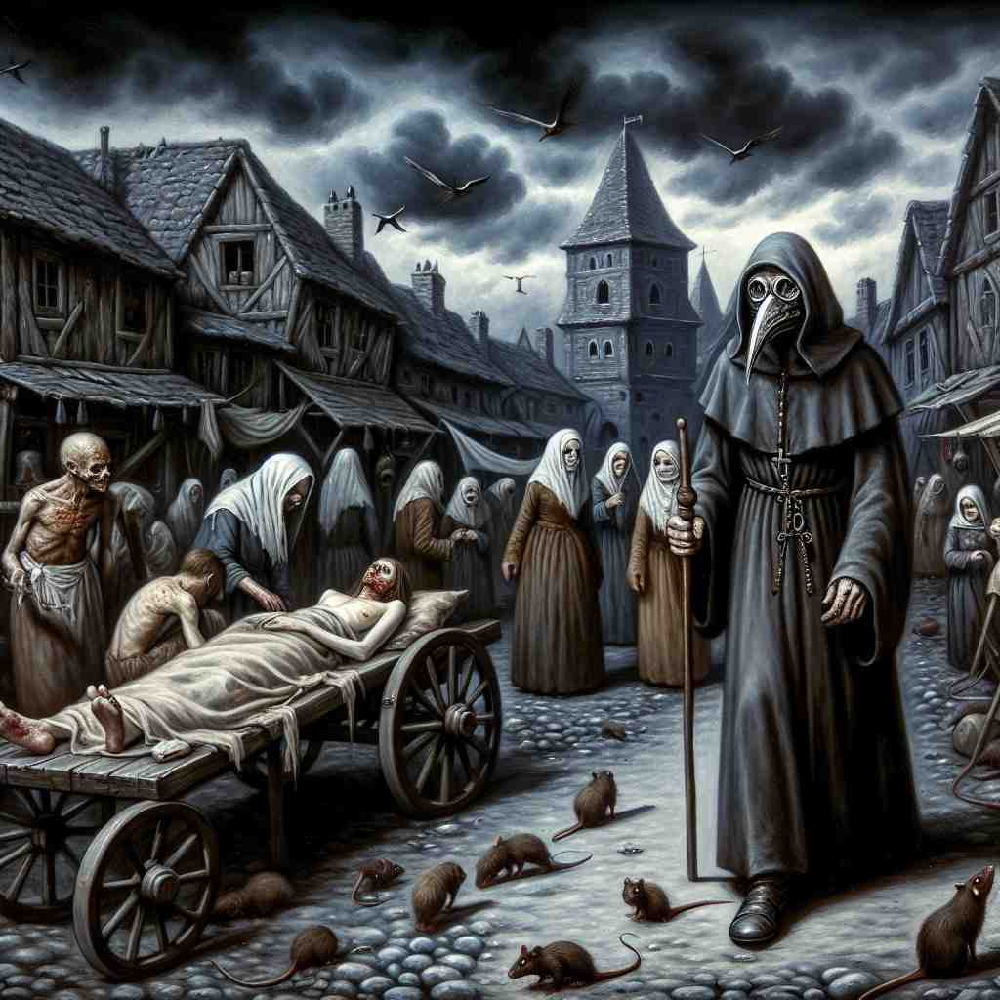

💬 The town suffers from a plague outbreak that affects many residents.

💬 The plague doctor tried to help the sick people in the town.

💬 The village experienced a plague outbreak, causing many to fall ill.
🔈 [pleɪg]
🗝️ n. a serious disease that spreads quickly and kills many people
🖼️ 在一个中世纪的村庄里，居民们匆忙地互相传递消息：一场可怕的瘟疫正在蔓延。街道上空无一人，只有风声掠过，似乎每一个角落都笼罩在死亡的阴影下。这个场景展示了'plague'作为一种迅速传播且致命的疾病的含义。
🔍 plague 的核心含义是一种迅速蔓延并致命的严重疾病。通过将这一概念扩展到其他领域，我们可以理解它如何演变成表示大量不愉快的事物、持续的困扰或烦恼。想象瘟疫的特征：快速传播、难以摆脱、造成严重后果，这些特点在 plague 的各种用法中都有体现，帮助我们更好地理解和记忆这个词的多重含义。
💬 The town suffers from a plague outbreak that affects many residents.
💬 The plague doctor tried to help the sick people in the town.
💬 The village experienced a plague outbreak, causing many to fall ill.
🌳 词根 'plag-' 源自拉丁语 'plaga'，意为瘟疫或灾祸。该词形容一种传染性很强的疾病，也可以引申为任何具有破坏性的大灾难。
💡 记忆 'plague' 可以联想为一种侵扰性的、难以控制的力量，就像瘟疫迅速传播。通过联想到 '灾难' 的威力，可以加深记忆。
🗝️ n. a large number of unpleasant things or people
🖼️ 在一个美丽的海滩上，突然出现了一大群蝗虫，遮住了太阳，沙滩上的游客们纷纷尖叫着逃开。这些不受欢迎的昆虫如同漫天黄沙般涌来，让人苦不堪言。这个场景体现了'plague'作为大量烦人的事物或人的含义。
💬 The city is suffering from a plague of rats.
❓ 像疾病一样迅速蔓延的大量不愉快事物
🗝️ v. to cause continual trouble or distress to
🖼️ 在一个安静的办公室里，一台旧电脑不断地出现故障。员工们不得不频繁地重启，浪费了大量工作时间。这个电脑的问题就像挥之不去的阴霾，令人烦恼不已。这里，'plague'表示持续不断地困扰或麻烦。
💬 He was plagued by doubts about his decision.
❓ 像瘟疫一样持续困扰某人
🗝️ v. to pester or annoy constantly
🖼️ 在一个温馨的家庭客厅中，一位小女孩不断地追问她的父亲：'这个是什么？那个是什么？还有那个呢？' 父亲微笑着耐心回答，但不免有些招架不住。这个场景展示了'plague'作为不断地打扰或烦扰的含义。
💬 Reporters plagued the celebrity with questions.
❓ 像瘟疫般不断骚扰或烦扰
🗝️ n. a disastrous evil or affliction
🖼️ 在一个消息报道中，记者提到了一场经济崩溃，被形容为对整个国家的灾难性打击。人人自危，市面状况一片萧条。这里'plague'被用来描述一种可怕的浩劫或痛苦。
💬 Unemployment has become a plague on our society.
❓ 如同瘟疫般的灾难性事件或困境